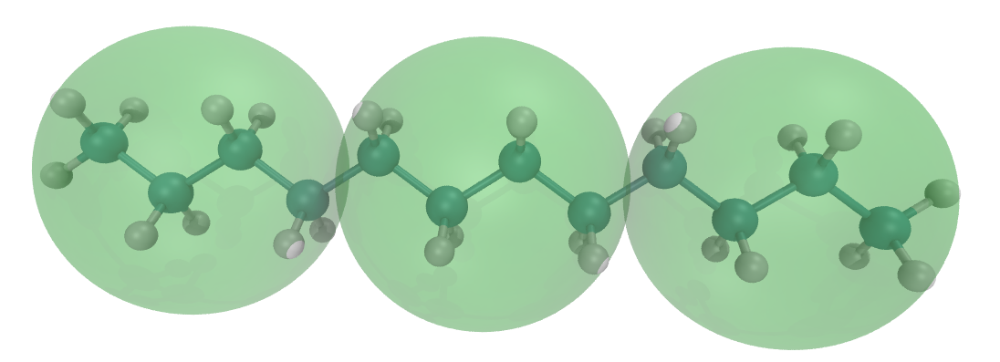
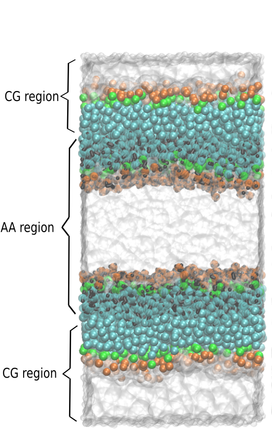
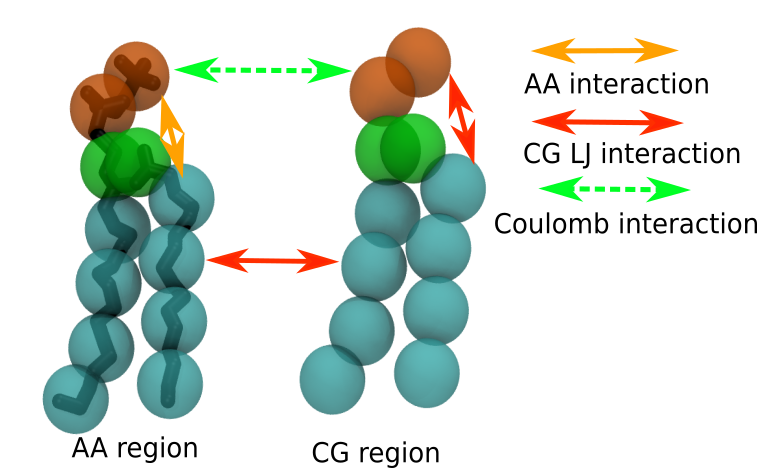
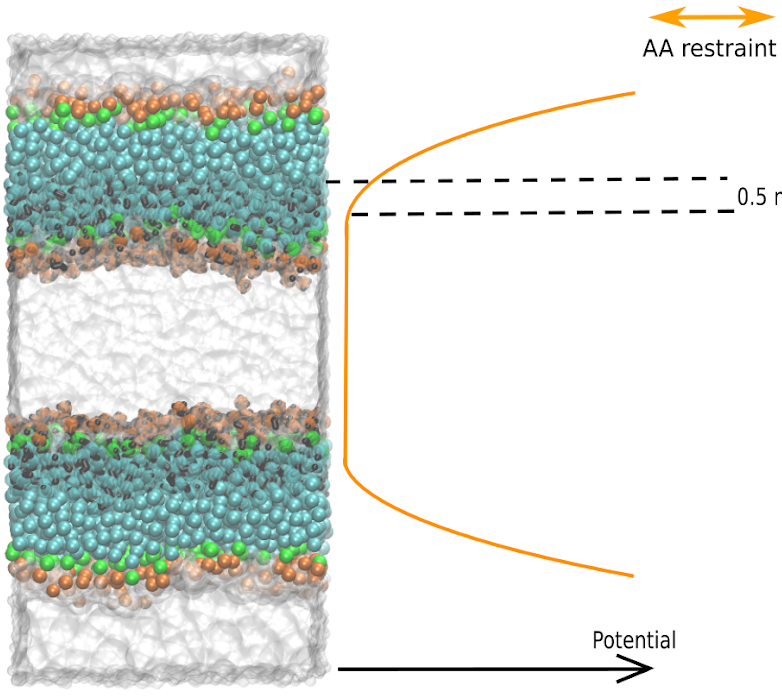

Dual resolution membrane simulation
In case of issues, please contact y.liu@rug.nl.
Summary
Introduction
All-atomistic (AA) and coarse-grain (CG) simulations have been successfully applied to investigate a broad range of biomolecular processes. However, the accessible time and length scales of AA simulation are limited and the specific molecular details of CG simulation are simplified. Here, we propose a VS-based hybrid scheme[1] that can concurrently couple AA and CG resolutions in a single membrane simulation, mitigating the shortcomings of either representation. We demonstrate this method by combining the Martini 2.x CG force field with the atomistic CHARMM36 force fields and apply the method to lipid membrane systems.
In this tutorial, we shall start with combining CHARMM/Martini force fields for a simple alkane system, so you can appreciate the VS method, before jumping to a more complicated application like membranes. Before starting the journey in this tutorial, we highly recommend you to read another beautifully written tutorial about VS hybrid model combining OPLS/Martini force field (http://cgmartini.nl/index.php/tutorials-general-introduction-gmx5/tutorial-hybrid-model-using-virtual-sites-gmx5).
The aim for this tutorial is to demonstrate how to combine Martini and CHARMM force fields using the virtual site (VS) scheme to simulate dual resolution membranes using capabilities of the Gromacs code. Setups and files can be found by downloading and unpacking (unzipping) the .zip file here. References to folders are made with respect to the parent folder that results after unpacking the .zip file.
VS hybrid alkane
In this section, you need to build a box of dodecane to familiarize yourself with the hybrid model. This approach requires a mapping of the particles in the AA model to the CG beads, defining VS located at the center of mass of the corresponding AA atoms.

Gromacs and represent the CG model as a map of the AA model. By using this construction, the positions and dynamics of the AA and CG representations become closely linked.We start the VS hybrid system from the AA CHARMM model. The CHARMM topology and input parameter files were produced by Ligand Reader & Modeler in Charmm-gui (https://www.charmm-gui.org/?doc=input/ligandrm). You can try this yourself (please refer to the Charmm-gui tutorials and examples; there is no description of the details in this tutorial), but if you want to focus on the VS hybrid building and simulation process, you can also find the files in the charmm_gui folder, which includes the CHARMM36 topology (LIG.itp and topol.top) and coordinate (ligandrm.pdb and cgbuilder.gro) files for a single dodecane molecule.
Build the hybrid topology file
It is recommended to collect all the (modified) files for a VS hybrid run in a separate directory. The folder dodecane_worked contains the fully worked simulation. In the description below, we will use the name VSHRun as the name for the folder that has the simulation. You can then compare your results to those in dodecane_worked.
Starting from the CHARMM dodecane topology file (charmm_gui/LIG.itp), you just need to add the VS information to the topology file. Copy this file to VSHRun/LIG.itp and modify it as explained in this section.
In the Martini model, the dodecane is represented by three C1 beads shown in Fig. 1 as the green transparent balls. To add these sites as virtual sites, two changes must be made to the topology file. Virtual sites are particles that belong to the molecule. Thus, you only need to put the VS beads (vC1) definition in the [ atoms ] directive.
[ atoms ]
; nr type resnr residu atom cgnr charge mass
1 CG331 1 LIG C1 1 -0.270 12.0110 ; qtot -0.270
2 CG321 1 LIG C2 2 -0.177 12.0110 ; qtot -0.447
3 CG321 1 LIG C3 3 -0.183 12.0110 ; qtot -0.630
……
36 HGA3 1 LIG H24 36 0.090 1.0080 ; qtot -0.180
37 HGA3 1 LIG H25 37 0.090 1.0080 ; qtot -0.090
38 HGA3 1 LIG H26 38 0.090 1.0080 ; qtot 0.000
; the following defines the VS atoms
39 vC1 1 VS VC1 38 0 0
40 vC1 1 VS VC2 38 0 0
41 vC1 1 VS VC3 38 0 0The positions of virtual sites are generated from the positions of the atoms. This is what AA to CG mapping is all about. The correspondence of the VS sites to the AA atoms is specified in the [ virtual_sitesn ] directory. The following contents define the correspondence between the AA atoms and VS beads are therefore also added to the LIG.itp file:
[ virtual_sitesn ]
39 2 1 2 3 4
40 2 5 6 7 8
41 2 9 10 11 12You can find the detailed information about the possible ways to define virtual sites in the Gromacs manual, but briefly, the first line in the [ virtual_sitesn ] directive shown above states that atom 39 is the center of mass (option 2 from virtual site options) of atoms 1, 2, 3, and 4 (which can be seen to be the first four C-atoms of the AA model). The mapping tells Gromacs how to calculate VS positions and forces on them from the atom positions and forces, and also how to calculate forces on the atoms from forces on the VS.
These are all the changes that need to be made to the LIG.itp to construct a VS hybrid topology. There are no CG bonded potentials (bonds, angles, dihedrals between VS or AA and VS particles) needed for our hybrid scheme.
Defining the interactions
We already have the .itp file for single hybrid dodecane (LIG.itp), but the CHARMM36 force field files do not know the new atom types (vC1) for the virtual sites. These must be combined with the CHARMM36 atom definitions and interactions. Here, we have done this for you; a more extensive explanation of how to build these files yourself is included in the section on the VS hybrid bilayer simulation. The file itp_file/ffnonbondH.itp contains the definitions of the virtual atom types. This file must be included in the system topology file (topol.top, copy this one from the charmm_gui folder). If we know that the number of molecules in the simulation is going to be 128 dodecane, we can already define 128 dodecane for the whole system in the .top file. We have made a ffnonbondH.itp file for you, how to build it is introduced in the following sections. The two modifications of the file topol.top are shown below.
#include "../itp_file/ffnonbondH.itp"
[ molecules ]
LIG 128Note that the include statement for the ffnonbondH.itp file must be added BEFORE the include statement of the charmm36.itp file. The number of molecules is specified at the bottom of the topol.top file.
Copy the charmm36.itp file from the charmm_gui directory to the working directory. In the charmm36.itp file, delete or comment out the lines referring [ defaults ] directive, because this is already defined in the ffnonbondH.itp file and a repetition results in a Gromacs error (in the gmx grompp step).
;[ defaults ]
; nbfunc comb-rule gen-pairs fudgeLJ fudgeQQ
;1 2 yes 1.0 1.0Build coordinate file
Now we are ready to build a coordinate file of a system of dodecane molecules, in our case, we will make a system of 128 dodecane molecules. You can transform the ligandrm.pdb file, created by Charmm-gui, to a CHARMM.gro file using the following file:
gmx editconf -f ligandrm.pdb -o CHARMM.groThe CHARMM .gro file of a single dodecane look like this:
Header
38
1LIG C1 1 0.618 -0.437 -0.000
1LIG C2 2 0.565 -0.294 -0.000
1LIG C3 3 0.412 -0.289 -0.000
…...
1LIG H24 36 -0.429 0.491 -0.090
1LIG H25 37 -0.429 0.491 0.090
1LIG H26 38 -0.576 0.438 -0.000
0.00000 0.00000 0.00000Copy this file to the working directory and give it the name one_hybrid_lig.gro. The three VS beads must be added to the end of the .gro file. The coordinates of the VS beads are the center of mass of their corresponding CHARMM atoms. The number of VS beads should be added to the total atoms numbers list in the second line of the .gro file. The final .gro file is rendered in VMD and shown in Fig. 1:
Header
41
1LIG C1 1 0.618 -0.437 -0.000
1LIG C2 2 0.565 -0.294 -0.000
1LIG C3 3 0.412 -0.289 -0.000
…...
1LIG H24 36 -0.429 0.491 -0.090
1LIG H25 37 -0.429 0.491 0.090
1LIG H26 38 -0.576 0.438 -0.000
1VS VC1 39 -0.335 0.292 -0.000
1VS VC2 40 0.076 0.000 0.000
1VS VC3 41 0.488 -0.292 -0.000
0.00000 0.00000 0.00000Make sure that you adhere to the formatting of the .gro file (a simple copy-paste of the lines with VS will not lead to a valid .gro file). With the coordinate file of a single hybrid dodecane, we can create a box containing 128 dodecane molecule on the command line:
gmx insert-molecules -ci one_hybrid_lig.gro -box 4 4 4 -nmol 128 -o dodecane_box.gro -try 1000Equilibrate and run the system
We have built the coordinate and topology files for 128 dodecane, thus we are ready for the simulation. The following command lines do a minimization of the initial system, an equilibration, and a (short) run. You can find .mdp files for this particular system in the directory dodecane_worked. Note that the runs may run into LINCS warnings/errors. You may then try to increase the number of minimization steps and/or insert short runs with a smaller time step and increase the time step bit by bit. Here is a series of commands:
gmx grompp -f minimization.mdp -p topol.top -c dodecane_box.gro -o mini_run.tpr -maxwarn 4gmx mdrun -deffnm mini_run -vgmx grompp -f martini_eq_2.mdp -p topol.top -c mini_run.gro -o eq.tpr -maxwarn 4gmx mdrun -deffnm eq -vgmx grompp -f martini_md.mdp -p topol.top -c eq.gro -o run.tpr -maxwarn 4gmx mdrun -deffnm run -vIn fact, you are fooled by me. The VS in this model will not interact with each other and this simulation is equivalent to just simulating dodecane using the CHARMM force field, with three extra particles for each molecule that do nothing except show where the CG mapped particles are. The reason for not letting the VS interact with each other is that interactions between all dodecane molecules are already considered in AA resolution. To avoid double-counting the interactions in CG (VS) resolution, the interactions between VS in the ffnonbondH.itp file are defined with Lennard-Jones (LJ) interaction parameters that are zero. However, you have learned how to build a VS-based Martini model. We will combine the hybrid components with AA and CG molecules in the dual resolution membrane model. In this set-up, part of the system is fully coarse-grained and another part of the system is described by hybrid molecules. The hybrid molecules interact with the fully CG molecules by CG interactions.
Dual resolution membrane

An intuitive way to build a dual resolution membrane system is a combination of AA membrane and CG water and put the resolution interface in the region around the lipid head of the membrane. However, it was shown that the VS hybrid AA/CG model fails to reproduce correct PMFs for the polar and charged AA solutes in CG solvent, yet properly reproduce the potentials of mean force (PMFs) between pairs of apolar amino acid side chain analogs. Although possible, the set-up with hybrid lipids and CG water results in severe artefacts (not published). Therefore, in this tutorial, the VS double-membrane systems are constructed as shown in Fig. 2, to keep the resolution interface at the apolar lipid tail region. More details can be found in . For the double membrane setup, any simulations requiring two membrane environments could benefit, e.g. to simulate the preliminary phase (stalk formation) of membrane fusion, or the effect of asymmetric ionic concentrations across the membrane, etc.
The full worked set-up for the dual resolution simulation is contained in the folder membrane_worked. It is advised that you create an empty folder yourself and work through the steps. You can compare your results to the one in the folder membrane_worked.
Build dual resolution AA and CG membrane system
Building a dual resolution membrane system can be done conveniently by using a number of tools developed for different purposes. In short, the procedure consists of four steps: (1) generating a coarse-grain membrane bilayer and water layer; (2) converting the CG lipids and water to AA VS hybrid lipids and AA water by backmapping; and (3) splitting the bilayer into leaflets, and shifting these to (4) combine original CG and backmapped parts to achieve a double membrane system, as shown in Fig. 2. We use the insane code to build the CG membrane system (1), from which the AA membrane (converted to hybrid lipids by adding VS as shown in the section on dodecane) and water are backmapped (2) using the backward software [9]. The original backward software can only backmap the CG membrane to the AA membrane. We tweak the library of the backward software to include the CG beads as VS in addition to the AA atoms, thus we build a hybrid membrane. You can find the modified library file here: backward/Mapping/dppc.charmm36.map. Note that python 2 is needed for backward and splitleafs softwares. The script splitleafs.py is downloaded from https://github.com/jbarnoud/splitleafs. The script is used for generating an index file that identifies upper and lower leaflets of the bilayer, which can be used to subsequently split the bilayer into leaflets (3) and combine them after shifting to create the double membrane set-up (4).
Create a new directory and run following command to build AA and CG membranes:
Step (1) is done by typing on the command line:
python3 ../insane/insane.py -o membrane_raw.gro -p top.top -x 8 -y 8 -z 10 -sol W -l DPPC=100This creates a CG bilayer of pure DPPC with 100 lipids per leaflet in an 8x8x10 nm box and adds water beads.
Step (2) is done by typing on the command line:
python2.7 ../backward/backward.py -f membrane_raw.gro -o hybrid.gro -from martini -to charmm36 -solThis creates a backmapped AA hybrid version of the CG membrane and water. This means, you now have coordinates for the AA hybrid model that were created from the CG membrane. As it is, AA hybrid and CG molecules are on top of each other. To create the double membrane system with different resolutions in one simulation cell, we will have to take some of these coordinates and shift them in space. Before we do this, we will have a look at the topologies. If you are an experienced Martini user and know all about mapping schemes and bead types, you may want to take a DPPC lipid from CHARMM36 and convert it into a VS hybrid DPPC, in analogy to the dodecane example and then compare it to our solution.
We start by copying some useful files that we prepared for you already.
cp -r ../needed_file_charmm/* .We copied the .mdp, .itp and .top files to the current working directory. The .mdp files are used for equilibration and production of the systems. The .itp files define the topologies of the hybrid and CG DPPC lipids. The dppc_CG.itp file remains the same as standard .itp files downloaded from here. When building the hybrid DPPC.itp file, the philosophy is the same as when you built the dodecane .itp file, namely adding VS definitions and their mapping scheme to the AA DPPC.itp file. The hybrid lipid DPPC.itp file is built for you in the needed_file_charmm file directory.
Below, we show the lines for the added virtual sites and how they are defined as the centers of mass in the [ virtual_sitesn ] directive section. Compare the names of the atom types for the virtual sites to the names of the bead types in the CG Martini file dppc_CG.itp. You will notice the same names with a ‘v’ in front of them. Another important point to note is that all charges of the VS are zero, in contrast to charges of the CG model. The NC3 and PO4 beads do have charges of +1 and -1, respectively in the Martini model, but for the hybrid DPPC molecule, the atomistic charges take care of the Coulomb interaction. You would be double-counting Coulomb interactions if the VS is also charged.
131 vQ0 2 VDPPC VNC3 131 0.000 0.000 ; qtot 1
132 vQa 2 VDPPC VPO4 132 -0.000 0.000 ; qtot 0
133 vNa 2 VDPPC VGL1 133 0.000 0.000 ; qtot 0
134 vNa 2 VDPPC VGL2 134 0.000 0.000 ; qtot 0
135 vC1 2 VDPPC VC1A 135 0.000 0.000 ; qtot 0
136 vC1 2 VDPPC VC2A 136 0.000 0.000 ; qtot 0
137 vC1 2 VDPPC VC3A 137 0.000 0.000 ; qtot 0
138 vC1 2 VDPPC VC4A 138 0.000 0.000 ; qtot 0
139 vC1 2 VDPPC VC1B 139 0.000 0.000 ; qtot 0
140 vC1 2 VDPPC VC2B 140 0.000 0.000 ; qtot 0
141 vC1 2 VDPPC VC3B 141 0.000 0.000 ; qtot 0
142 vC1 2 VDPPC VC4B 142 0.000 0.000 ; qtot 0
…...
[ virtual_sitesn ]
131 2 1 2 6 10 14
132 2 17 20 25 28
133 2 28 30 32
134 2 36 39 40 41 42
135 2 33 45 48
136 2 51 54 57 60
137 2 63 66 69 72
138 2 75 78 81 84
139 2 42 88 91
140 2 94 97 100 103
141 2 106 109 112 115
142 2 118 121 124 127Build coordinate file
The following commands are used to build the hybrid membrane setup as illustrated in Fig. 2. This setup is realized by shifting and combining the AA and CG membranes.
Step (3): identify lipids in upper and lower leaflets and create an index file with the atom indices of the two leaflets for the CG model:
The following four lines split the CG membrane (and CG water) using the index file and shift the upper CG leaflet along the z-axis.
the input file is put after “–”, e.g. the position of the membrane_raw.gro
python2.7 ../splitleaflet/splitleafs.py --atom DPPC:PO4 W:W -r -- membrane_raw.gro > tail_leaflets.ndxecho "0"|gmx editconf -f membrane_raw.gro -n tail_leaflets.ndx -o lower_cg.groecho "1"|gmx editconf -f membrane_raw.gro -n tail_leaflets.ndx -o upper_cg.grogmx editconf -f upper_cg.gro -o upper_cg_moved.gro -translate 0 0 10The following four lines split the hybrid membrane (and AA water) using the index file and shift the lower hybrid leaflet along the z-axis.
the input file is put after “–”, e.g. the position of the hybrid.gro
python2.7 ../splitleaflet/splitleafs.py --atom DPPC:VPO4 SOL:OW -r -- hybrid.gro > tail_leaflets.ndxecho "1"|gmx editconf -f hybrid.gro -n tail_leaflets.ndx -o upper_hb.groecho "0"|gmx editconf -f hybrid.gro -n tail_leaflets.ndx -o lower_hb.grogmx editconf -f lower_hb.gro -o lower_hb_moved.gro -translate 0 0 10The following five lines combine all the leaflets and water coordinates into one file. Turning all the .gro files into .pdb files and concatenating them together in .pdb format.
gmx editconf -f lower_hb_moved.gro -o lower_hb_moved.pdbgmx editconf -f upper_hb.gro -o upper_hb.pdbgmx editconf -f upper_cg_moved.gro -o upper_cg_moved.pdbgmx editconf -f lower_cg.gro -o lower_cg.pdb cat upper_hb.pdb lower_hb_moved.pdb upper_cg_moved.pdb lower_cg.pdb | grep -e "^ATOM" > whole.pdbAt this point it may be useful to visually inspect your coordinates to check that you did not make typo’s and that the double layer set-up appears credible. You can do this by loading the file whole.pdb into VMD or PYMOL, or some other viewer.
Finally, convert the .pdb file to a .gro file.
gmx editconf -f whole.pdb -resnr 1 -o whole.groThe following three lines give the size of the box to the .gro file. The box size in the z-direction is doubled from the membrane_raw.gro file.
sed '$d' whole.gro > whole1.grotail -n 1 membrane_raw.gro |awk '{print $1" "$2" "$3*2}' >>whole1.grocp whole1.gro whole.groBuilding the topology file

The interactions in the VS hybrid scheme used in this tutorial are schematically shown in Fig. 3 for lipid molecules. The main idea of this VS hybrid scheme is that, for LJ interactions, AA particles interact with AA particles according to the AA force field, and CG particles interact with CG particles according to the CG force field. AA particles do not interact directly with CG particles, but the interaction between molecules at AA resolution with molecules at CG resolution is achieved through VS. These VS carry interactions at CG level, i.e. the AA molecule ‘sees’ the embedding surroundings at the level of the CG model. Conversely, the CG molecules ‘see’ the AA molecules as CG molecules. To accomplish this interaction scheme, we have built a ffnonbondH.itp file for you in the itp_file folder, and which was already used in the dodecane set-up. The file ffnonbondH.itp contains the particle definitions for the AA, CG, and VS particles, and are constructed using the original AA force field (in this case CHARMM36), the original Martini force field (in this case Martini2), and selected interactions for the virtual particles (those starting with ‘v’), such that they interact only with the fully CG part of the system. The pair LJ interactions are defined in the[ nonbond_params ] directory, e.g.
[ nonbond_params ]
C1 vC1 1 0.4700 3.4999The interactions between VS particles should not be included, thus the VS nonbonded parameters are simply omitted in [ nonbond_params ]. For Coulomb interactions, we use PME, thus all the AA/CG atoms carrying changes can interact with each other. Note again that VS beads do not carry charges.
The following lines look complicated, but just to automatically build the topology file. You can copy these lines to your terminal or build a topology file by hand on your own. You can do this by hand if you know from looking at the insane output how many water beads were generated. Backward should generate 4 SOL molecules for each W bead. The numbers need to end up at the bottom of the file top.top (see the end of this subsection).
The following 8 lines count the number of AA and CG water and write the numbers to shell variables. The splitleafs.py software can output the number of water in each region and we just need to extract the numbers. It is advisable to put the next sequence of commands into a bash script (some outputs depend on the nature of the shell). By next sequence, we mean all commands up to and including the EOF.
python2.7 ../splitleaflet/splitleafs.py --atom SOL:OW -r -- hybrid.gro 2 > sol_num_file.xvgpython2.7 ../splitleaflet/splitleafs.py --atom W:W -r -- membrane_raw.gro 2 > w_num_file.xvgcat sol_num_file.xvg|awk '{print $1 $2/3}'>solvent_num_file.xvgrm sol_num_file.xvgupper_leaflet_w=$(cat w_num_file.xvg |grep "upper_leaflet" | awk -F ':' '{print $2}'| awk '{print $1}')lower_leaflet_w=$(cat w_num_file.xvg |grep "lower_leaflet" | awk -F ':' '{print $2}'| awk '{print $1}')upper_leaflet_sol=$(cat solvent_num_file.xvg |grep "upper_leaflet" | awk -F ':' '{print $2}')lower_leaflet_sol=$(cat solvent_num_file.xvg |grep "lower_leaflet" | awk -F ':' '{print $2}')The following line writes the number of DPPC lipids to variables.
dppc_num=$(cat top.top |grep -m 1 "^DPPC "| awk '{print $2}')The following lines create the .top files using the molecule number variables defined above. They start by including the molecule definitions and following the numbers of molecules in the system.
cat << EOF > top.top
#include "ffnonbondH.itp"
#include "DPPC.itp"
#include "TIP3.itp"
#include "dppc_CG.itp"
[ system ]
; name
INSANE! Membrane UpperLeaflet>POPC=3.0 LowerLeaflet>POPC=3.0
[ molecules ]
; name number
DPPC 100
TIP3 $upper_leaflet_sol
DPPC 100
TIP3 $lower_leaflet_sol
DPPCC 100
W $upper_leaflet_w
DPPCC 100
W $lower_leaflet_w
EOFEquilibrate the hybrid system
The following two lines are to build an index file for equilibration and production. These different subgroups are needed for the temperature coupling in different thermostat groups(AA DPPC, CG DPPC, VS DPPC, AA water, and CG water). Note that position restraints are applied. Depending on the gromacs version, the -r option need not be supplied, because by default it would use the starting coordinates.
gmx grompp -f nothing.mdp -c whole.gro -o index.tpr -p top.top -maxwarn 10 -r whole.groecho -e "del 1-15\nr DPPC\nname 1 bilayer_hybrid_AA\nr VDPPC \nname 2 VS\nr DPPCC \nname 3 bilayer_pure_CG\nr W\nname 4 W\nr TIP3\nname 5 SOL\nr DPPCC W \nname 6 CG\nr DPPC TIP3\nname 7 AA\nq\n" | gmx make_ndx -f index.tpr -o index.ndxBefore proceeding, check that the index group [ VS ] starts with atom number 131. If it starts with 1, then you will get errors later on. The echo command above works properly in bash, but perhaps not in another shell. You can package it in a bash script to make it work properly.
The next series of lines are designed to equilibrate the system, through energy minimization, smaller time steps, and using the softcore potential. Note that a softcore potential is only used in the martini_eq_2.mdp file, thus, the simulation is expected to be slow. The softcore potential is triggered through these .mdp lines:
free-energy = yes
init-lambda = 1
sc-alpha = 4
sc-power = 2
sc-coul = yes
nstdhdl = 0
couple-moltype = system
couple-lambda0 = vdw-q
couple-lambda1 = none
couple-intramol = yesTo run the equilibration, use the following commands:
gmx grompp -f minimization.mdp -c whole.gro -p top.top -o mini_run_1.tpr -maxwarn 1 -n index.ndx -r whole.groThis energy minimization may crash, depending on your workstation and the way you compile the Gromacs. If so, please run the system with only one CPU. Namely adding -nt 1 to the command lines that are minimization runs below (i.e. use gmx mdrun -nt 1 etc…)
gmx mdrun -deffnm mini_run_1 -vIn the next step, a softcore potential is used and this step takes some time!
gmx grompp -f martini_eq_2.mdp -c mini_run_1.gro -p top.top -o mini_run_2.tpr -maxwarn 3 -n index.ndx -r mini_run_1.grogmx mdrun -deffnm mini_run_2 -vNext, we continue with minimization and equilibration without the softcore, and this should run faster (more steps per unit wall-time).
gmx grompp -f minimization.mdp -c mini_run_2 -p top.top -o mini_run_2_1.tpr -maxwarn 1 -n index.ndxgmx mdrun -deffnm mini_run_2_1 -vgmx grompp -f martini_eq_3.mdp -c mini_run_2_1.gro -p top.top -o mini_run_3.tpr -maxwarn 3 -n index.ndx -r mini_run_2.grogmx mdrun -deffnm mini_run_3 -vgmx grompp -f martini_eq_4.mdp -c mini_run_3.gro -p top.top -o mini_run_4.tpr -maxwarn 3 -n index.ndx -r mini_run_3.grogmx mdrun -deffnm mini_run_4 -vRun the hybrid system

The flat bottom potential is used to restrain the AA water and stop them from crossing the membrane, as shown in Fig. 4. To accomplish this, we write a python code to project the coordinates of AA water on a xy plane, located at the center of the bulk AA water in the z-axis, and build the restrain .gro file (test_FBP.gro) for you. Thus, if AA water molecules diffuse too far from the water plane in the z-axis will be pushed back.
The
flat_bottom_potential.pyfile needs three variables: path to the directory, the input file and the output file:
python3 ../build_restrain_gro_file/flat_bottom_potential.py ./ mini_run_4.gro test_FBP.grogmx grompp -f martini_md.mdp -c mini_run_4.gro -p top.top -o run.tpr -maxwarn 3 -n index.ndx -r test_FBP.grogmx mdrun -deffnm run -vYour system may still need some more equilibration - if the run crashes (for example after LINCS warnings start appearing), try a short run with smaller time step (e.g. 0.5 fs instead of 2) and slowly increase the time step. Another thing worth trying is to use the v-rescale thermostat and berendsen barostat first, before using the standard Nose-Hoover thermostat and Parrinello-Rahman barostat.
Conclusions
Congratulations! You have grasped how to combine Martini and CHARMM force fields using the virtual site (VS) approach to simulate dual resolution membranes. For now, this hybrid scheme only supports DPPC membranes and you are welcome to extend it to other membranes. The rule of thumb is that you can adjust the interactions between two resolutions while keeping the AA and CG potential unchanged. The aim is to reproduce the correct conformational or even dynamical properties, e.g. area per lipid, partial density, order parameter, diffusion constant, etc. against the AA and CG references.
Tools and scripts used in this tutorial
GROMACS(http://www.gromacs.org/)insane.py(downloadable here)backward(downloadable here)
References
[1] Wassenaar, T. A., Ingólfsson, H. I., Prieß, M., Marrink, S. J., & Schäfer, L. V. (2013). Mixing MARTINI: Electrostatic Coupling in Hybrid Atomistic–Coarse-Grained Biomolecular Simulations. The Journal of Physical Chemistry B, 117(13), 3516–3530. https://doi.org/10.1021/jp311533p